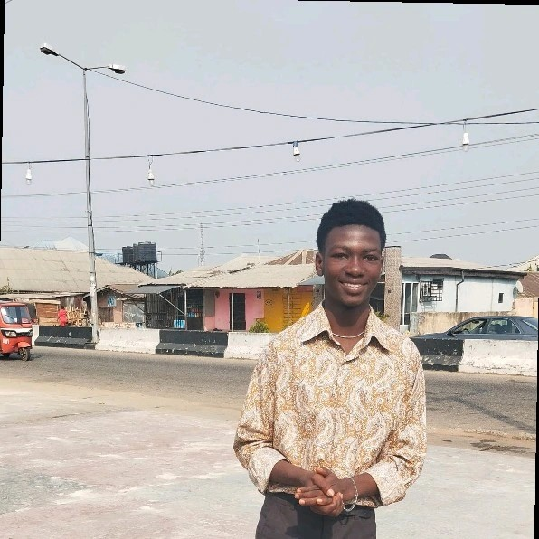

Ohotuowo Morgan Agrinya
About Me
My name is Morgan I am from Nigeria and I live in AkwaIbom state, I attend the University of Uyo. I am a frontend developer currently working with AlphaX digital company. I am also into web3 and other tech oriented jobs and gigs. I am taking the WDD 131 byu pathway course to improve my skills and chances of getting a job.
My country

Nigeria, an African country on the Gulf of Guinea, has many natural landmarks and wildlife reserves. Protected areas such as Cross River National Park and Yankari National Park have waterfalls, dense rainforest, savanna and rare primate habitats. One of the most recognizable sites is Zuma Rock, a 725m-tall monolith outside the capital of Abuja that's pictured on the national currency.